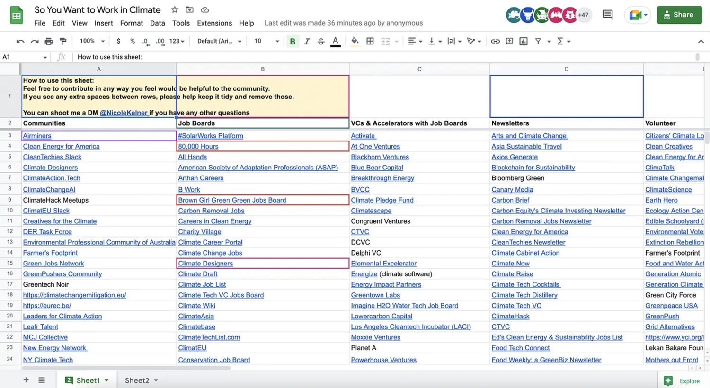
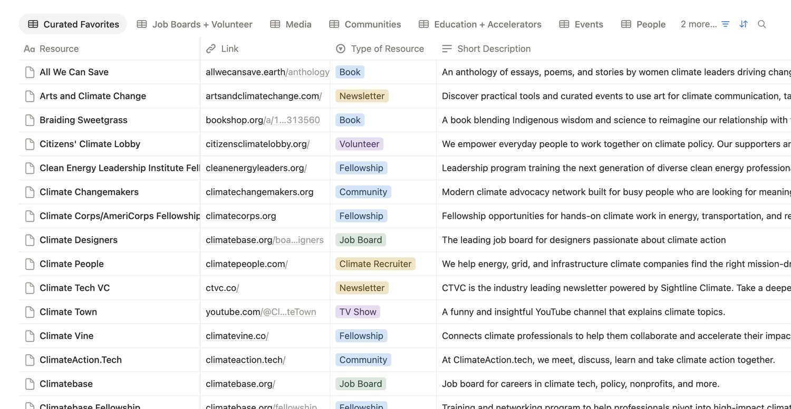
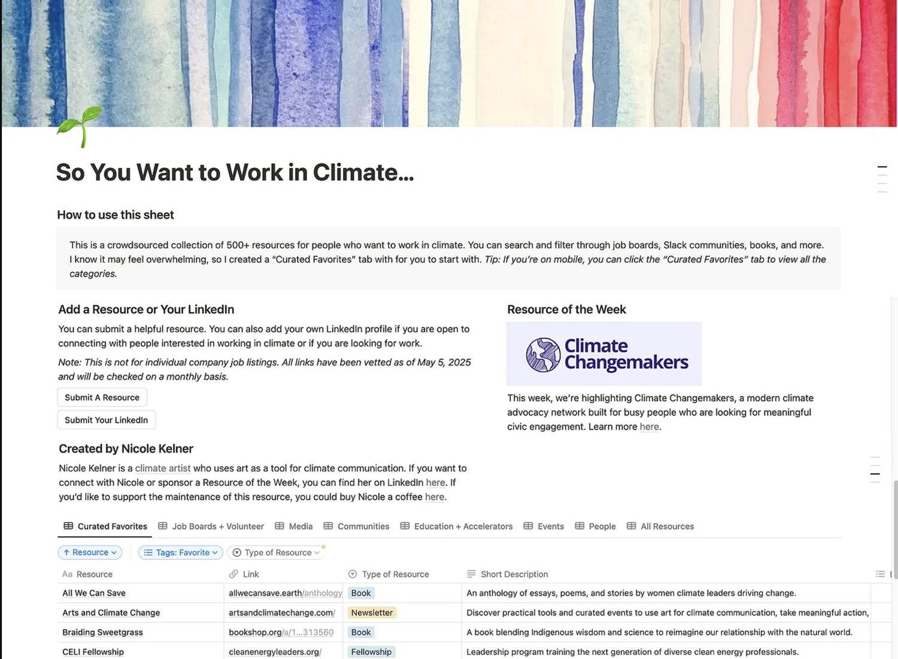

So You Want to Work in Climate
A crowdsourced resource to help people land jobs in climate.
- Role
- Founder & Product Lead
- Timeline
- Ongoing
- Platform
- Google Sheet → Notion database
- Team
- Managed a student team from a UNC entrepreneurship class
- Outcome
- 500+ curated resources · 25,000 views in six months
In short
- ProblemPeople trying to break into climate work had no map. The resources existed, scattered across newsletters, Slack groups, and other people's bookmarks, and every newcomer rebuilt the same list from scratch.
- ApproachI started a crowdsourced Google Sheet, then managed a student team through migrating it into a structured Notion database once contribution volume outgrew a flat list.
- ResultOver 500 curated resources and 25,000 views in the first six months. Users have reported using it to land jobs.
The problem
I kept getting the same message: I want to work on climate, I don't know where to start. Every answer I gave was a list I retyped from memory, and every person I sent it to went on to build their own version of the same list a month later. The information wasn't missing. It just wasn't shared.
The people best positioned to fix that were the people asking the question, because they were the ones actively finding things. They had just finished the search I was answering from memory, and their version was more current than mine.
The mechanic
This is the closest thing in my work to a two-sided platform, and it has an unusual property: the two sides are the same people. Someone arrives looking for a fellowship, finds three, and knows about a fourth that isn't listed. If contributing is easy at that exact moment, the database improves. If it isn't, the knowledge leaves with them.
Almost every product decision followed from protecting that loop.
The people using it were the only ones who knew what was missing. The product's job was to make contributing easier than complaining.
Decisions and tradeoffs
Keeping the sheet. Building a custom site.
The sheet was right at ten resources and wrong at several hundred: no filtering, no structure, and every new row made it harder to read, so the thing contributors were adding to was the thing their additions were ruining. A custom site would have needed a maintainer I didn't have and couldn't pay.
Categorizing by sector: energy, transport, food, finance.
Someone with no climate background doesn't yet know which sector they want; that's the whole reason they're here. They do know they need a job board, or a fellowship, or somewhere to learn. Categories that match the question get used. Categories that match the taxonomy get browsed once and abandoned.
Curating it myself. A fully open wiki with no gate.
Curating alone caps the database at the edge of my own network, which is exactly the limitation it exists to solve. Fully open decays into dead links and self-promotion. Open-with-review keeps the loop turning at a moderation cost I can personally carry, and that ceiling is the real constraint on how large this can get.
What shipped
A filterable database organized by what someone is trying to do next, not by industry vertical. The student team I managed did the migration and the initial categorization; I set the structure, the contribution flow, and the review standard.



Results
The honest caveat: I have view counts and unsolicited reports of people landing jobs, but no instrumentation on the loop itself. I can't tell you the contribution rate, and I should be able to.
What I'd do next
Instrument the contribution loop: what fraction of readers submit anything, and how that changes depending on where the submission prompt sits. That single number would tell me whether the database is a community product or a publication with a suggestion box, and I currently don't know which one I have.